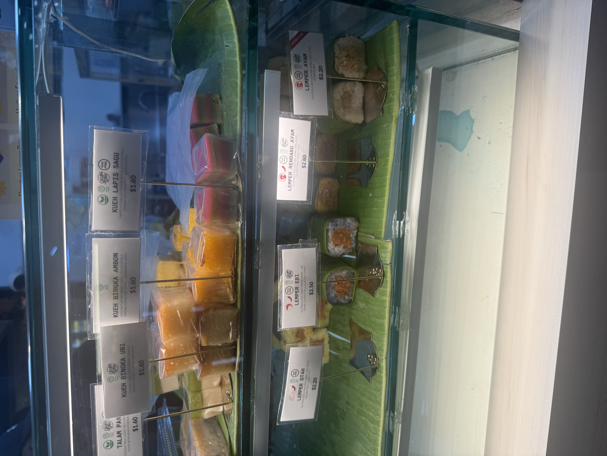
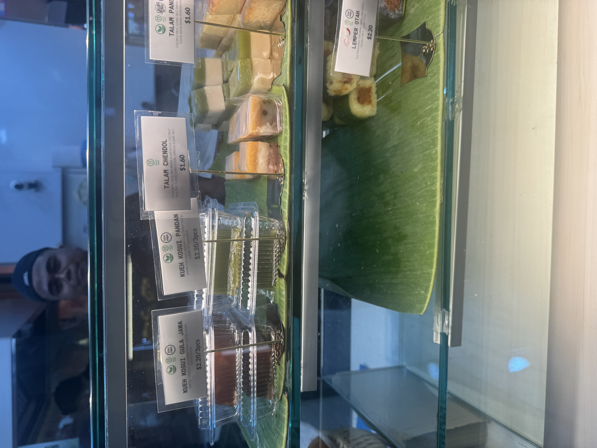
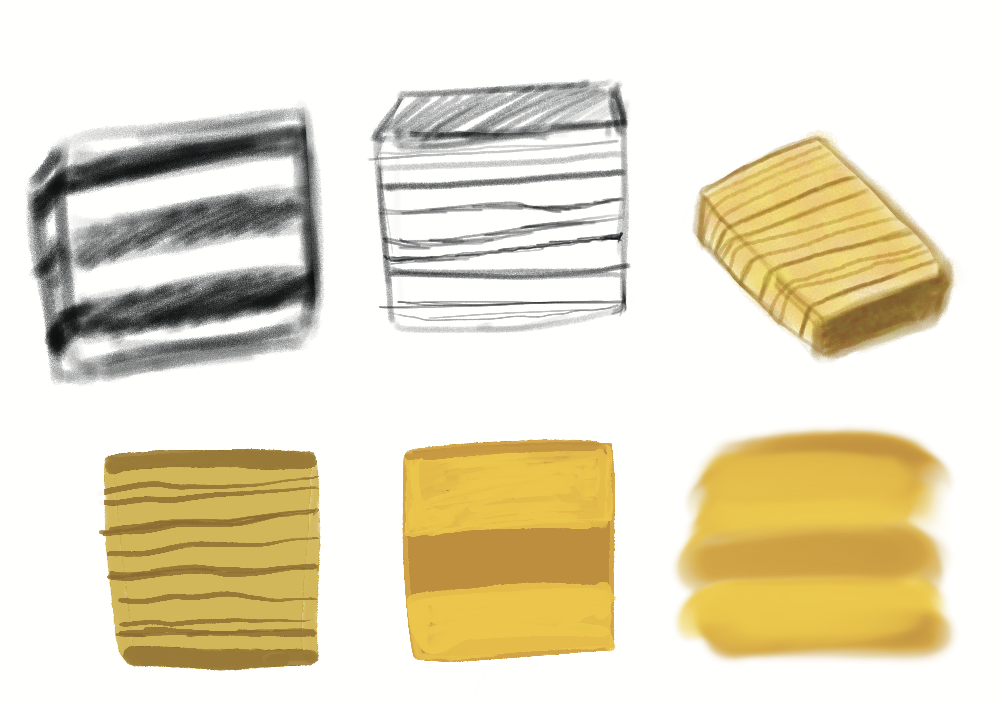
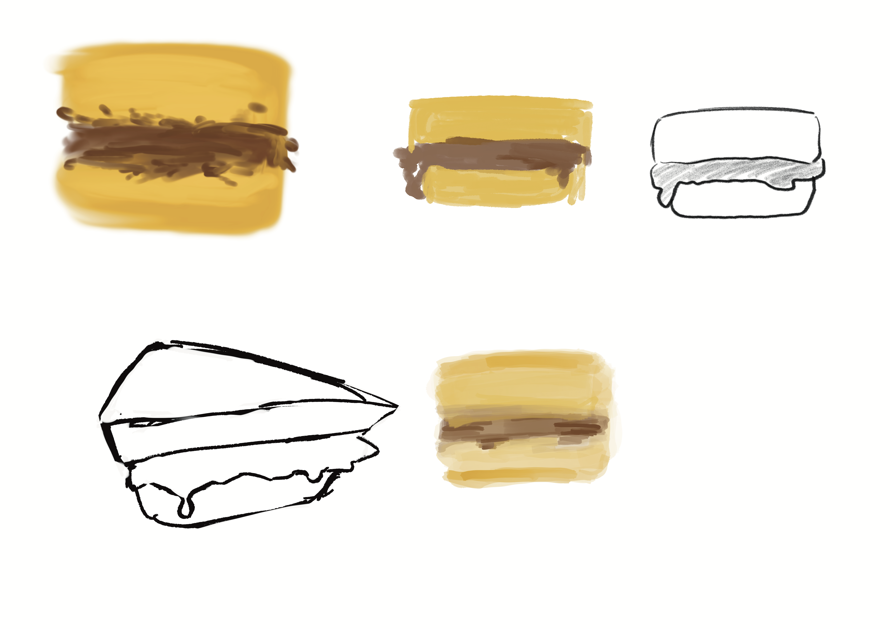

Research Exploration
This week I visited the Pasar Malem in Tampines in search of finding some Indonesian cakes. However I couldn't find any but I did find some in a small corner store in the Tampines Hub. I took some pictures to use as my inspirations to create the sketches.


It's not all Indonesian snacks because it's part of Singapore snacks too which they called Nyonya cakes. Nyonya cakes are a mixture of sweet and savoury snacks that are bite-sized. The reason why Indonesian snacks are displayed is because nyonya cakes are a fusion of Indonesian and Malay that uses Chinese cooking methods. It’s also known as Peranakan snacks.
Design Process
This week I have thought about how I was going to execute this approach. I did think of a method which is drawing specifically sketching because I believe that it would serve as a powerful visual representation tool.
I did some rough sketches based on the picture I took from the store. I took the picture and then worked on the sketches. Though not all the sketches that i took are sourced from the real life images so I do have to search it online.


Firstly, I created a few digital sketches of Kue Lapis and Martabak in different styles to figure out what style I like to have for my project. I started with a simple black and white before adding in the colors, to make sure that the proportions and appearance are as accurate as possible. Once I got the basics, I played around with the perspective of how the snacks would look from different angles.
Reflection
Visiting the Pasar Malem was important because it helps me to observe more in depth. Comparing it to the festival in week 1, I felt that the Pasar Malem is even more festive because of the layout of the stalls and the crowd. I vividly remember that it was very packed with people and it was very humid but that's the beauty of Jajan Pasar.